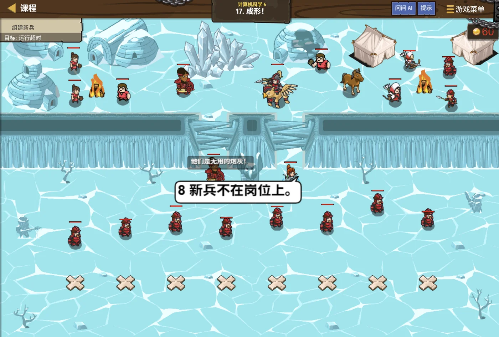
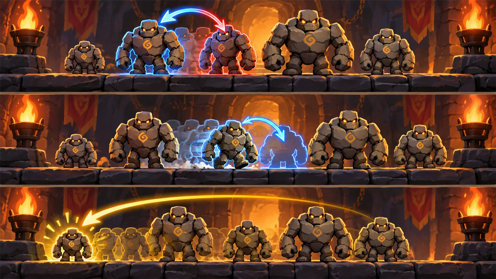

故事：城门前集合了一批新兵，还没受过训练。
教官皱着眉：个头参差不齐，怎么排队？——他们的 health 正好和身高成正比。
戈登说：从最矮的开始挑，一个一个挑出来排到左边去。
扣哒考级 · GESP C++ 四级 · 第 7 单元 | 齿轮高台 GEARWATCH TERRACE
队列整编台 排序算法与复杂度
Sorting & Complexity

安雅
红发队长 · 你的向导
整编台上站着一群高矮不一的石头人，乱糟糟地挤成一团。
安雅吹了一声哨子：全体注意——从矮到高，排成一列。
石人们开始挪动，有的两两换位，有的被拎出来插到前面。
你盯着看了一会儿：它们用的方法不一样啊。
对，她收起哨子，排好序的方法有很多种——而我们要学会比较，哪种更快。
安雅吹了一声哨子：全体注意——从矮到高，排成一列。
石人们开始挪动，有的两两换位，有的被拎出来插到前面。
你盯着看了一会儿：它们用的方法不一样啊。
对，她收起哨子，排好序的方法有很多种——而我们要学会比较，哪种更快。
安雅 · 红发队长
到这一课，你已经会循环、数组、函数、递推了。这一课学排序——它是算法里最经典的一类问题，也是第一次接触"谁的效率更高"。
排好序不只是"看起来整齐"，它能让后面很多事情快得多。
assets/illustrations/py-L4-07-01_queue_platform.webp
【配图位】高台上，一群高矮不一的石头人被哨声指挥着从矮到高排成一列；左侧还是乱糟糟的一团，右侧已经排好；一名红发队长站在台中央吹哨，脚下画着一条从矮到高的标尺线，石人身后的地面留着挪动过的弧形脚印。
0 单元导语与目标
Unit Overview
0.1 学习目标
1学完这个单元，你将能……
- 说清排序的作用
- 独立写出选择排序
- 独立写出冒泡排序
- 正确交换两个数组元素
- 数出一个排序算法做了多少次比较
- 说出"时间复杂度"在描述什么
2对标 GESP 考纲（C++ 四级）
- 理解排序的作用与基本思路
- 掌握选择排序与冒泡排序的实现
- 掌握两个元素的交换方法
- 理解比较次数与时间复杂度的概念
- 考核目标：能写出排序程序，能数出比较次数、判断复杂度量级
0.2 考纲对照
| 本单元小节 | 对应考纲条目 | 真题常考形式 |
|---|---|---|
| 1 为什么要排序 | 排序的作用 | 排好序之后能带来什么方便 |
| 2 选择排序 | 选择排序的过程 | 每一轮做了什么；第一轮结束后的结果 |
| 3 冒泡排序 | 冒泡排序的过程 | 每一轮把哪个元素送到了末尾 |
| 4 交换元素 | 元素的交换 | 交换的写法；不借临时变量行不行 |
| 5 比较次数与复杂度 | 算法效率的估算 | n 个数排序大约比较多少次 |
1 为什么要排序
Why Sort
1.1 排序有什么用
排序的目的不只是"看起来整齐"，它能让后面的操作快很多：
| 操作 | 没排序时 | 排好序后 |
|---|---|---|
| 找最大值 | 整个数组扫一遍 | 直接看最后一个 |
| 找最小值 | 整个数组扫一遍 | 直接看第一个 |
| 找中位数 | 麻烦 | 看中间那个 |
| 查某个数在不在 | 一个个查 | 可以用"二分"快速定位 |
排序的本质：
通过一系列"比较 + 交换"，把一串数据按某个规则重新排列。
把大的往右挪，小的往左挪，直到所有相邻的两个都满足"左边 ≤ 右边"—— 这时候整串数据就排好了。
把大的往右挪，小的往左挪，直到所有相邻的两个都满足"左边 ≤ 右边"—— 这时候整串数据就排好了。
1.2 排序的本质
打个比方：
排序就像给一队高低不齐的人重新排队——谁高谁矮一开始是乱的，排好之后一眼就能看出顺序。
排好之后有什么好处？找最高的只要看最后一个，找最矮的只要看第一个，查东西也能快很多。
所以排序不是为了"看起来整齐"，而是为了让后面的活儿更好干。
排好之后有什么好处？找最高的只要看最后一个，找最矮的只要看第一个，查东西也能快很多。
所以排序不是为了"看起来整齐"，而是为了让后面的活儿更好干。
2 选择排序
Selection Sort
2.1 每一轮挑出最小的
选择排序的口诀一句话：每一轮从"还没排好的部分"里挑出最小的，换到这一轮的最前面。
用 5 个数走一遍
TEXT
原始： 5 9 3 7 2
第 1 轮：在 [5 9 3 7 2] 里找最小的 → 2，和 5 交换
2 9 3 7 5
└ 已排好
第 2 轮：在 [9 3 7 5] 里找最小的 → 3，和 9 交换
2 3 9 7 5
└───┘ 已排好
第 3 轮：在 [9 7 5] 里找最小的 → 5，和 9 交换
2 3 5 7 9
└───────┘ 已排好
第 4 轮：在 [7 9] 里找最小的 → 7，已在原位
2 3 5 7 9 ✔ 排好了
一共 4 轮（n−1 轮就够了，最后剩下的那个自然最大）关键 每一轮结束，"已排好的部分"就多一个，范围从左边一寸寸推进
2.2 完整实现
选择排序的代码
C++
#include <iostream>
using namespace std;
int a[1005];
int main() {
int n;
cin >> n;
for (int i = 0; i < n; i++) cin >> a[i];
for (int i = 0; i < n - 1; i++) { // 一共 n-1 轮
int mn = i; // ★ 先"假设"第 i 个最小
for (int j = i + 1; j < n; j++) { // 在剩下的里找
if (a[j] < a[mn]) mn = j; // 找到更小的就记住位置
}
if (mn != i) { // 真的找到更小的才交换
int t = a[i];
a[i] = a[mn];
a[mn] = t;
}
}
for (int i = 0; i < n; i++) cout << a[i] << " ";
return 0;
}输入 5 / 5 9 3 7 2 输出 2 3 5 7 9
两个细节 ① 外层循环写
② 记录的是下标（
两个细节 ① 外层循环写
i < n - 1，最后一轮不用做；② 记录的是下标（
mn），不是值——因为最后要交换
为什么要先"假设"再"找"？
因为要找的是"最小的那个在哪"。
最自然的写法就是：先假设"第一个是最小的"， 然后一个个比过去，遇到更小的就改口"哦，原来是这个最小"。
这个"先假设、再否定"的思路，是找最值类问题的通用写法。
最自然的写法就是：先假设"第一个是最小的"， 然后一个个比过去，遇到更小的就改口"哦，原来是这个最小"。
这个"先假设、再否定"的思路，是找最值类问题的通用写法。
图 2（SVG）：选择排序——挑好再换
3 冒泡排序
Bubble Sort
3.1 相邻比较，大的往后冒
冒泡排序的口诀：相邻两个比较，前面比后面大就交换——最大的会像气泡一样"冒"到末尾。
用 5 个数走一遍
TEXT
原始： 5 9 3 7 2
第 1 轮（从头两两比较，把最大的送到末尾）：
5 9 比 → 不换 5 9 3 7 2
9 3 比 → 换 5 3 9 7 2
9 7 比 → 换 5 3 7 9 2
9 2 比 → 换 5 3 7 2 9
└ 9 冒到末尾了
第 2 轮： 3 5 2 7 9
└ 7 到位
第 3 轮： 3 2 5 7 9
└ 5 到位
第 4 轮： 2 3 5 7 9 ✔ 排好了
规律：第 k 轮结束，末尾就有 k 个已排好；一共 n−1 轮和选择排序的区别
选择排序是"挑好再换"（一轮一换）；
冒泡排序是"边比边换"（一轮可能换很多次）
冒泡排序是"边比边换"（一轮可能换很多次）
3.2 优化：提前退出
带"提前退出"的冒泡排序
C++
for (int i = n - 1; i > 0; i--) { // 每轮的范围逐渐缩小
bool changed = false; // ★ 本轮有没有交换过？
for (int j = 0; j < i; j++) {
if (a[j] > a[j + 1]) {
int t = a[j];
a[j] = a[j + 1];
a[j + 1] = t;
changed = true; // ★ 换过了
}
}
if (!changed) break; // ★ 一轮下来没换过 → 已经有序，收工
}两个空填什么
循环开始前：
交换之后：
这就是真题里考过的那个
changed = false（还没换过）；交换之后：
changed = true（换过了）。这就是真题里考过的那个
changed 标志
提前退出为什么有效？
因为如果一整轮下来一次交换都没发生，说明所有相邻的两个都已经"左小右大"——
整个数组已经有序了。
这时候再往下跑就是白费力气。
最好的情况（数组本来就排好）下，冒泡排序只需要一轮就能结束—— 这让它的效率从"永远 O(n²)"降到"最好 O(n)"。
这时候再往下跑就是白费力气。
最好的情况（数组本来就排好）下，冒泡排序只需要一轮就能结束—— 这让它的效率从"永远 O(n²)"降到"最好 O(n)"。
图 3（SVG）：冒泡排序——最大的像气泡一样冒到末尾
| 对比项 | 选择排序 | 冒泡排序 |
|---|---|---|
| 一轮做什么 | 先找最小的，再交换一次 | 边比边换，可能换很多次 |
| 一轮结束谁到位 | 最前面那个 | 最后面那个 |
| 比较次数 | n(n−1)/2 | n(n−1)/2 |
| 交换次数 | 最多 n−1 次 | 可能很多次 |
| 能不能提前退出 | 一般不能 | 能（用 changed 标志） |
4 交换两个元素
Swapping
4.1 借一个临时变量
排序离不开交换。最经典的写法是借一个临时变量：
三步交换法
C++
int a = 5, b = 9;
int t = a; // ① 先把 a 存起来（否则马上就被覆盖了）
a = b; // ② 把 b 写进 a
b = t; // ③ 把存起来的原值写进 b
cout << a << " " << b << endl; // 9 5
// 也可以直接用标准库的 swap
swap(a, b); // 效果一样，更省事OUTPUT 9 5
为什么必须借 t？ 因为
为什么必须借 t？ 因为
a = b 会把 a 原来的值冲掉——
不先存起来，原值就找不回来了4.2 交换写错的后果
错误的交换：两个变量变成一个
C++
int a = 5, b = 9;
a = b; // a 变成 9
b = a; // b 也变成 9 ← 原来的 5 彻底丢了
cout << a << " " << b << endl; // 9 9 ✘
// 还有一种"看起来聪明"的写法（不借临时变量）
a = a + b; // a = 14
b = a - b; // b = 5
a = a - b; // a = 9
// 结果确实对了，但用了加减法，
// 数据一大就可能溢出——不推荐结论 老老实实用临时变量，或者直接
"抖机灵"的写法要么错、要么有风险
swap"抖机灵"的写法要么错、要么有风险
交换时最容易犯的错：
① 忘了用临时变量——两个变量最后变成同一个值。
② 交换的是"值"而不是"下标"——在结构体数组排序时， 必须整个结构体一起换，否则数据会错位（上一课讲过）。
③ 在循环里交换时写错了下标——比如冒泡里写成
② 交换的是"值"而不是"下标"——在结构体数组排序时， 必须整个结构体一起换，否则数据会错位（上一课讲过）。
③ 在循环里交换时写错了下标——比如冒泡里写成
a[j] 和 a[j]，等于没换。
5 比较次数与复杂度
Complexity
5.1 数一数比较了多少次
怎么判断一个排序算法"快不快"？最简单的办法是数一数它比较了多少次。
把比较次数数出来
TEXT
选择排序的比较次数：
第 1 轮：剩下 n 个数，比较 n-1 次
第 2 轮：剩下 n-1 个数，比较 n-2 次
第 3 轮：剩下 n-2 个数，比较 n-3 次
……
最后一轮：比较 1 次
总数 = (n-1) + (n-2) + … + 1 = n(n-1)/2
n = 5 时：4 + 3 + 2 + 1 = 10 次
n = 10 时：9 + 8 + … + 1 = 45 次
n = 100 时：99 + … + 1 = 4950 次关键观察
n 翻一倍，比较次数大约翻四倍——因为 n(n−1)/2 里有个 n²
5.2 什么叫时间复杂度
时间复杂度的意思：
它不是"跑多少秒"，而是"运算次数随数据规模怎么增长"。
选择排序和冒泡排序的比较次数都约为
读作"n 平方阶"。
它想告诉你的是：数据量一大，这种算法会变得很慢。
选择排序和冒泡排序的比较次数都约为
n²/2——
我们只看"量级"，所以记作 O(n²)。读作"n 平方阶"。
它想告诉你的是：数据量一大，这种算法会变得很慢。
| 复杂度 | 意思 | n = 1000 时大约的运算次数 |
|---|---|---|
O(1) | 和数据量无关 | 1 |
O(n) | 和数据量成正比 | 1000 |
O(n log n) | 比 n 多一点 | 约 10000 |
O(n²) | 和数据量的平方成正比 | 约 500000 |
怎么看出是 O(n²)？
数一数循环的层数：
单层循环跑 n 次 →
两层嵌套循环各跑约 n 次 →
外层 n 次、内层每次"减半"地跑（比如
注意：如果内层不是"跑 n 次"而是"跑 log n 次"，那两层合起来就是 n log n 而不是 n²。
单层循环跑 n 次 →
O(n)；两层嵌套循环各跑约 n 次 →
O(n²)；外层 n 次、内层每次"减半"地跑（比如
j *= 2）→ O(n log n)。注意：如果内层不是"跑 n 次"而是"跑 log n 次"，那两层合起来就是 n log n 而不是 n²。
图 4（SVG）：复杂度——数据量增长时，运算次数怎么涨
6 代码实战
Level Practice
关卡
成形！
进入关卡 →思路：这就是选择排序：每一轮都从"还没排队的人"里挑出最矮的， 放到已经排好的队伍末尾。轮数等于人数，每一轮都要把所有没排的人看一遍—— 所以它简单，但也慢。

assets/stages/py-L4-07-stage1_form_up.webp
【关卡截图位】请把《成形！》的游戏画面截图放到此处（放入 assets/stages/ 目录，文件名为 py-L4-07-stage1_form_up.webp）。
重点示例：每轮挑出最矮的一个
C++
vector<Unit> sorted; // 排好的结果
while (!recruits.empty()) { // 还有没排队的
int minIdx = 0; // 先假设第一个最矮
for (int i = 1; i < (int)recruits.size(); i++) {
if (recruits[i].health < recruits[minIdx].health)
minIdx = i; // 找到真正最矮的
}
sorted.push_back(recruits[minIdx]); // 排到结果末尾
recruits.erase(recruits.begin() + minIdx); // 从待排队伍里拿走
}要点 每轮都重新找"最小的那个"；人数 n 时，比较次数大约是 n×n/2——数据一多就慢下来了
和本单元的关系：
选择排序的复杂度是
换成归并排序就是
去扣哒世界闯这一关 →
O(n²)：外层 n 轮，内层每轮最多比 n 次。换成归并排序就是
O(n log n)——人数翻倍，工作量只多一倍多一点。
这正是本单元要算的那笔账。

assets/illustrations/py-L4-07-02_three_sorts.webp
【配图位】高台上并排三条通道，每条通道里都站着一排高矮不一的石头人，起始排列完全相同：第一条通道上画着相邻两只石头人交换位置的弧线箭头；第二条通道上画着一只石头人从队首走向队尾、沿途让位的轨迹；第三条通道上画着最矮的那个被光柱选中并移动到最前面的轨迹；一名红发队长站在三条通道前，手里举着哨子。
assets/illustrations/py-L4-07-03_bubble_pass.webp
【配图位】高台上的一排石头人，从左到右两两比较，相邻两只之间画着短促的交换弧线；画面右侧队尾那只最高的石头人头顶浮着一个气泡形状的发光轮廓（表示它正被冒泡送到末尾），身后的石头人都比它矮；一名红发队长吹着哨子站在队首指挥。
Common Pitfalls
7 常见陷阱

扣哒鸭 · 调试官
排序的错，两大来源：循环边界、交换写错。四条。
1
外层循环写成
i < n。
扣哒鸭：选择排序其实只要
虽然写
n−1 轮，
因为最后剩下的那一个自然就是最大的，不用再挑。虽然写
i < n 结果也对（多跑一轮空转），
但比赛里讲究效率，写成 i < n - 1 更好。建议写法：
for (int i = 0; i < n - 1; i++)2
内层循环写成
j = 0 从头开始。
扣哒鸭：内层应该从
因为前 i 个已经排好了，不用再去碰它们。
从 0 开始不会算错，但会白白多比很多次。
i + 1 开始——因为前 i 个已经排好了，不用再去碰它们。
从 0 开始不会算错，但会白白多比很多次。
正确写法：
for (int j = i + 1; j < n; j++)3
交换时忘了借临时变量。

扣哒鸭：写
第一句就把 a 的原值冲掉了，第二句又把同一个值写回去，结果两个都一样。
必须
a = b; b = a; 是典型的错法——第一句就把 a 的原值冲掉了，第二句又把同一个值写回去，结果两个都一样。
必须
t = a; a = b; b = t;。记牢：先存、再写、后还
4
以为"两层循环就一定都是 O(n²)"。

扣哒鸭：得看内层循环跑多少次。
内层也是 n 次 →
内层每次翻倍地跑（
另外，排序的比较次数和交换次数是两回事——选择排序比较多、交换少。
内层也是 n 次 →
O(n²)；内层每次翻倍地跑（
j *= 2）→ 只有 log n 次 → 合起来是 O(n log n)。另外，排序的比较次数和交换次数是两回事——选择排序比较多、交换少。
判据：看内层循环到底跑多少次，而不是数有几层
8 题目练习
Practice
前 3 题改编自 C++ 四级真题，其余为原创练习题。
改编自 2026 年 6 月 · C++ 四级 · 第 8 题单选题
下面是一个带"提前退出"优化的冒泡排序，两处横线应分别填入（ ）。
void bubbleSort(int a[], int n) {
for (int i = n - 1; i > 0; i--) {
bool changed = ______;
for (int j = 0; j < i; j++) {
if (a[j] > a[j + 1]) {
int t = a[j]; a[j] = a[j + 1]; a[j + 1] = t;
changed = ______;
}
}
if (!changed) break;
}
}
A.
false，false B.true，false C.false，true D.true，true查看答案与详解
答案：C。
第一处：每一轮开始时，还没比过，所以先设成
第二处：一旦发生交换，就改成
循环末尾的
A 项会导致永远"没换过"，第一轮就错误地退出了； B、D 项一开始就是
对应小节3.2 优化：提前退出。
changed 这个标志的作用是
记录"这一轮有没有发生过交换"。第一处：每一轮开始时，还没比过，所以先设成
false（假设没换过）。第二处：一旦发生交换，就改成
true，
表示"这一轮动过"。循环末尾的
if (!changed) break; 是关键：
如果一整轮下来一次都没换，说明所有相邻元素都已经是"左 ≤ 右"——数组已有序，可以提前收工。A 项会导致永远"没换过"，第一轮就错误地退出了； B、D 项一开始就是
true，那提前退出永远不会触发，
优化就失效了。对应小节3.2 优化：提前退出。
改编自 2026 年 9 月 · C++ 四级 · 判断题 第 8 题判断题
下面两层循环的时间复杂度是
O(n log n)。（ ）for (int i = 0; i < n; i++) {
for (int j = 1; j < n; j *= 2) {
cout << i + j;
}
}
查看答案与详解
答案：正确（√）。关键要看内层循环跑多少次，而不是数有几层循环。
内层：
外层：跑
合起来：
对比一下：如果内层写成
记忆口诀："每次乘 2 / 除 2" = log n 次；"每次加 1" = n 次。
对应小节5.2 什么叫时间复杂度。
内层：
j 从 1 开始，每次都 乘以 2——
1、2、4、8、16……要几次数到 n？大约 log₂n 次。外层：跑
n 次。合起来：
n × log n，也就是 O(n log n) ∎对比一下：如果内层写成
j++（每次加 1），
那内层也是 n 次，整体就退化成 O(n²)。记忆口诀："每次乘 2 / 除 2" = log n 次；"每次加 1" = n 次。
对应小节5.2 什么叫时间复杂度。
改编自 2026 年 9 月 · C++ 四级 · 判断题 第 6 题判断题
对于按升序实现的稳定插入排序，移动元素的条件通常应为
a[j] >= key，这样才能保证相等元素的相对顺序不变。（ ）查看答案与详解
答案：错误（×）。这里的关键判据是：相等元素到底该不该往后挪？
如果条件写
要保证稳定（相等元素相对顺序不变），条件应该写
一句话记牢：想让排序稳定，比较时就不要带等号。
对应小节3.1 相邻比较，大的往后冒（这题的思想和"严格大于才交换"是一回事）。
如果条件写
a[j] >= key：遇到相等的元素也会把它往后挪，
于是 key 被插到了相等元素前面——
原来的先后顺序被颠倒了，这就是"不稳定"。要保证稳定（相等元素相对顺序不变），条件应该写
a[j] > key——
遇到相等的就停下来，key 插在它们后面，顺序就保住了。一句话记牢：想让排序稳定，比较时就不要带等号。
对应小节3.1 相邻比较，大的往后冒（这题的思想和"严格大于才交换"是一回事）。
原创练习题单选题
用选择排序把一个长度为 5 的数组从小到大排序，一共需要比较多少次（ ）。
A.
5 B.10 C.15 D.25查看答案与详解
答案：B。选择排序的比较次数和原始数据无关，只和数据量有关：
第 1 轮：在 5 个数里找最小 → 比 4 次
第 2 轮：在剩下 4 个数里找 → 比 3 次
第 3 轮：比 2 次
第 4 轮：比 1 次
合计 4 + 3 + 2 + 1 = 10 次。
公式：n(n−1)/2，n = 5 时就是 5×4÷2 = 10 ✔
D 项（25 = 5²）是误以为"每个都要和每个比一遍"； 实际上已经比过的组合不用重复比。
对应小节5.1 数一数比较了多少次。
第 1 轮：在 5 个数里找最小 → 比 4 次
第 2 轮：在剩下 4 个数里找 → 比 3 次
第 3 轮：比 2 次
第 4 轮：比 1 次
合计 4 + 3 + 2 + 1 = 10 次。
公式：n(n−1)/2，n = 5 时就是 5×4÷2 = 10 ✔
D 项（25 = 5²）是误以为"每个都要和每个比一遍"； 实际上已经比过的组合不用重复比。
对应小节5.1 数一数比较了多少次。
原创练习题判断题
选择排序和冒泡排序的比较次数都是
n(n−1)/2 次，
所以它们的效率完全一样。（ ）查看答案与详解
答案：错误（×）。比较次数一样，不代表效率完全一样。
关键差别在"交换次数"：
选择排序——每一轮最多只交换 1 次，总共最多
冒泡排序——每一轮只要发现逆序就换， 最坏情况下总交换次数也是
而"交换"通常比"比较"更费时间——因为一次交换涉及三次赋值。
所以：在交换代价大的场景下，选择排序更有优势； 但冒泡排序有个杀手锏：可以"提前退出"—— 数据基本有序时，冒泡几乎瞬间完成，而选择排序仍要老老实实比完。
结论：复杂度相同 ≠ 实际表现相同，还要看常数、交换次数和数据特征。
对应小节3.2 优化：提前退出。
关键差别在"交换次数"：
选择排序——每一轮最多只交换 1 次，总共最多
n−1 次；冒泡排序——每一轮只要发现逆序就换， 最坏情况下总交换次数也是
n(n−1)/2 级别。而"交换"通常比"比较"更费时间——因为一次交换涉及三次赋值。
所以：在交换代价大的场景下，选择排序更有优势； 但冒泡排序有个杀手锏：可以"提前退出"—— 数据基本有序时，冒泡几乎瞬间完成，而选择排序仍要老老实实比完。
结论：复杂度相同 ≠ 实际表现相同，还要看常数、交换次数和数据特征。
对应小节3.2 优化：提前退出。
原创练习题编程题
题目要求：读入 n 个整数，用冒泡排序把它们从小到大排好并输出，
同时输出排序过程中一共发生了多少次交换。
查看参考答案与要点
#include <iostream>
using namespace std;
int a[1005];
int main() {
int n;
cin >> n;
for (int i = 0; i < n; i++) cin >> a[i];
int swaps = 0; // ★ 统计交换次数
for (int i = n - 1; i > 0; i--) {
for (int j = 0; j < i; j++) {
if (a[j] > a[j + 1]) { // 前大后小 → 交换
int t = a[j];
a[j] = a[j + 1];
a[j + 1] = t;
swaps++; // 记一次
}
}
}
for (int i = 0; i < n; i++) cout << a[i] << " ";
cout << endl;
cout << swaps << endl;
return 0;
}
输入 5 / 5 9 3 7 2
输出 2 3 5 7 9 / 6
要点：
① 交换次数用冒泡统计很自然——因为冒泡本身就是"边比边换"，
每换一次就 swaps++；
② 注意内层边界是 j < i，并且用 a[j+1]——
所以 j 最大只能到 i−1，
否则 a[j+1] 就越界了；
③ 外层从 i = n−1 开始递减，每轮结束末尾就多一个已排好的，
内层范围随之缩小；
④ "交换次数"也叫"逆序对个数"——
它反映的是"这组数据原本有多乱"，和数据的初始顺序有关（而比较次数无关）。
对应小节3.1 相邻比较；5.1 数一数比较了多少次。
9 本单元小结
Unit Summary
安雅 · 红发队长
四句话记住排序：一、选择排序：每一轮挑出最小的换到前面——"挑好再换"，一轮一换。
二、冒泡排序：相邻两两比较，大的往后冒——"边比边换"，一轮可能换很多次。
三、交换必须借临时变量：
t = a; a = b; b = t;四、两者的比较次数都是 n(n−1)/2，记作 O(n²)；两层循环不等于 O(n²)，要看内层跑多少次。
队伍排齐了。最后一站是档案库与安全阀——那里要解决两件事：怎么让数据"留下来"，以及怎么让程序"摔不坏"。
你在队列整编台收获了什么
- 排序的作用——找最值、找中位数、二分查找都变得很方便。
- 选择排序——每一轮挑出剩下里最小的，换到这一轮的最前面；一轮只交换一次。
- 冒泡排序——相邻两两比较，大的往后冒；一轮结束末尾多一个到位的。
- 冒泡的提前退出——用
changed标志，一轮没换过就说明已经有序。 - 元素交换——
t = a; a = b; b = t;；或直接用swap(a, b)。 - 交换的典型错误——
a = b; b = a;会让两个变量变成同一个值。 - 比较次数——两种排序都是
n(n−1)/2次，与原始数据顺序无关。 - 交换次数——和数据原本有多乱有关（选择排序最多 n−1 次，冒泡可能多得多）。
- 时间复杂度——描述"运算次数随数据规模怎么增长"；这两种排序都是
O(n²)。 - 判复杂度的办法——看内层循环跑多少次："每次加 1"是 n 次，"每次乘 2"是 log n 次。
- 稳定的含义——相等元素保持原来的先后顺序；比较时不带等号才能保持稳定。
- 验证排序正确——检查相邻元素是否都满足"左 ≤ 右"。
下一站：档案库与安全阀
车间最深处的档案库锁着一柜柜的资料。程序算出来的东西，一关机就没了——
想让它们留下来，就得写进档案里。
下一单元我们学文件操作与异常处理：
怎么把数据存进文件，又怎么让程序在出状况时不至于当场崩溃。